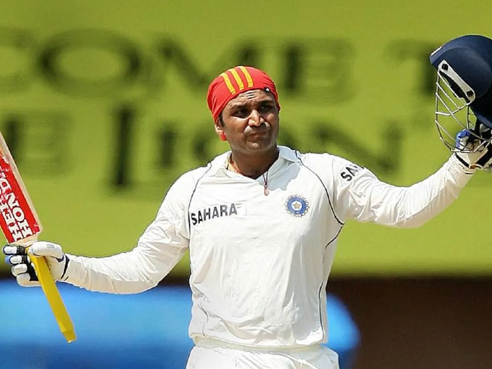
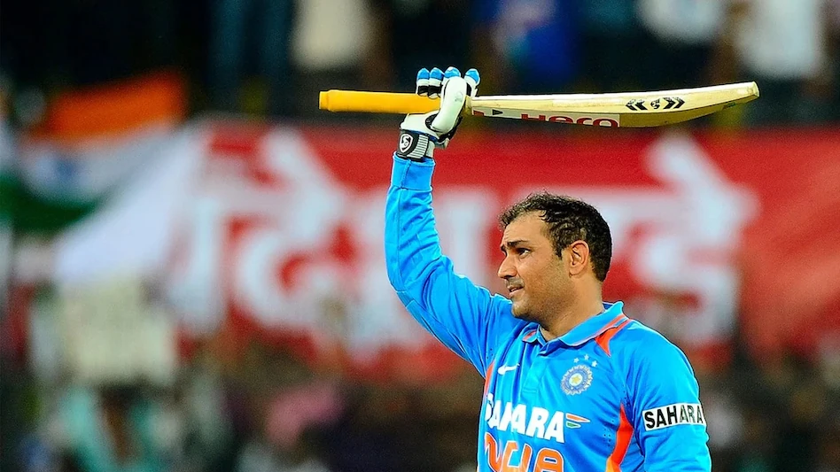

Virender Sehwag
Role: Batsman
Bio: Virender Sehwag was a destructive opening batsman known for his fearless stroke play, often giving India explosive starts, particularly in Test and ODI formats.
Career Stats
| Format | Matches | Innings | Not Outs | Runs | High Score | Average | Balls Faced | Strike Rate | 100s | 50s | Fours | Sixes |
|---|---|---|---|---|---|---|---|---|---|---|---|---|
| Test | 104 | 180 | 6 | 8586 | 319 | 49.3 | 9834 | 82.2 | 23 | 32 | 1233 | 90 |
| ODI | 251 | 245 | 9 | 8273 | 219 | 35.1 | 7919 | 104.3 | 15 | 38 | 1132 | 136 |
| T20I | 19 | 18 | 1 | 394 | 68 | 21.9 | 299 | 131.7 | 0 | 2 | 45 | 16 |
Memorable Moments

Virender Sehwag’s 319 against South Africa in 2008, the fastest triple century in Test cricket history, is one of the most memorable innings in world cricket.
In 2011, Sehwag became the second cricketer to score a double century in ODIs, with a stunning 219 against the West Indies.